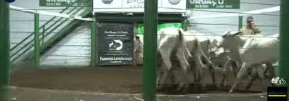
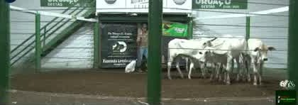
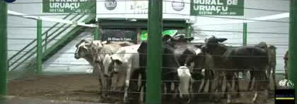
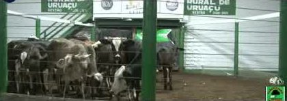
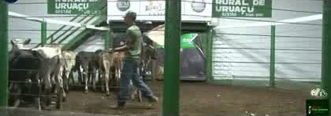

"Nelore" na tela nem sempre é lote branco.
Quem escreve a tarja é o vendedor. No nosso levantamento, de 30% a 50% dos lotes "Nelore" tinham animal de outra cor. Por isso a gente olha três imagens de cada lote antes de dar o selo.



7 bezerras · 12 meses
R$ 2.330/cab100% brancas
WM Leilões, Uruaçu · 28/10 · lote no minuto 1:05:30 do vídeo.



18 novilhas · 24 meses
R$ 1.910/cabTem animal de outra corTarja dizia "Nelore"
WM Leilões, Uruaçu · 04/11 · parece barato, mas é lote misturado. Fica fora do seu ranking.